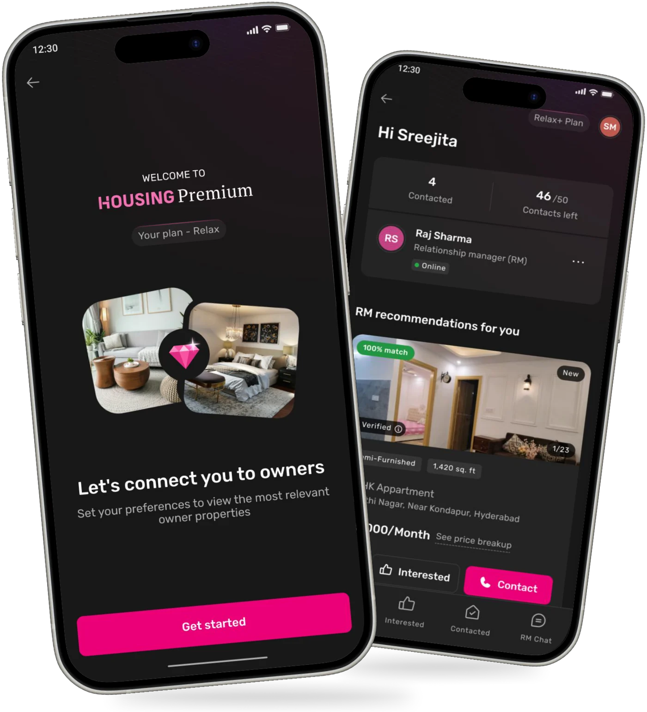
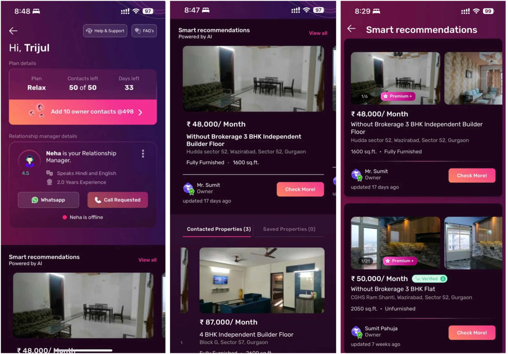
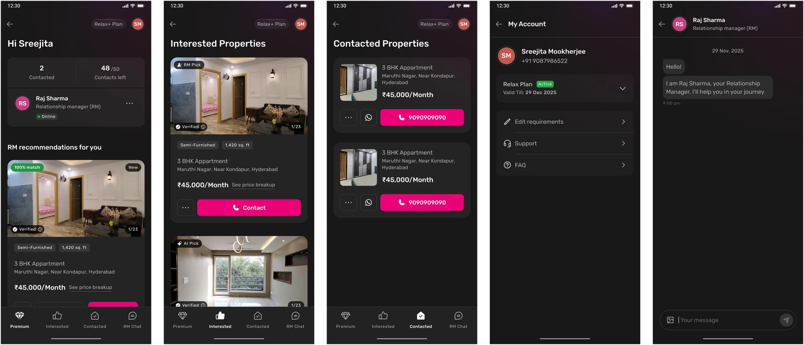
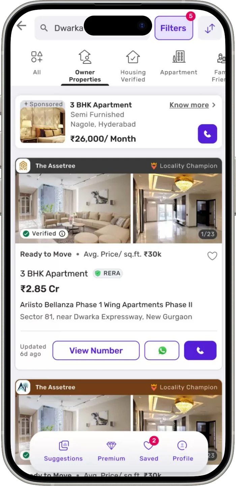

Housing Premium · Proptech · B2C
Dashboard revamp
After purchasing an HP plan, seekers were handed off to WhatsApp for their property search, making the experience feel fragmented and disconnected from the value they had paid for.
A premium plan, but not a premium experience.

The premium experience broke after purchase
The WhatsApp based journey lacked the structure and visibility expected from a premium property search service.
- No visibility into shared, shortlisted, or rejected properties
- No structured place to view and manage recommendations
- Escalations when seekers felt they weren’t receiving enough suggestions

After Redesign
A premium experience, built around the seeker
Centralised journey
Everything from recommendations to RM support in one place.
Visible progress
Clear separation of interested and contacted properties.
Curated recommendations
RM and AI picks make the search feel personalised.
Greater control
Seekers can manage their search without relying entirely on the RM.

Made the light to dark transition seamless too!
The transition was designed to feel natural and intentional, creating a clear shift from the regular Housing.com experience into a more elevated premium journey.

Keep exploring